SAVE AFRICA FROM FAMINE
Food crisis afflicting Africa is the major humanitarian issue which has to be addressed with major efforts as well. Following the dispatch of Action Team to Somalia, Yemen, South Sudan and Nigeria to reduce the crisis, Aksi Cepat Tanggap launches significant program known as “Humanitarian Ship”.
WORLD’S FAMINE-AFFECTED COUNTRIES
The life-threatening acute food insecurity and malnutrition affect four countries. Twenty million people in Somalia, Yemen, South Sudan and Nigeria are on the verge of death, as they grapple with severe hunger and drought.
22 million children are malnourished
1 child dies every 10 mins
1 million children are malnourished
1.5 million people are displaced due to conflict
2.3 thousand children die every 24 hrs
2 million people are displaced
244 thousand children are malnourished
1 person dies every 26 mins
70 thousand children are malnourished
55 thousand people are at risk of cholera
Humanitarian Ship of Aksi Cepat Tanggap
Humanitarian Ship is a concrete support from Indonesian people who strive to prevent the impending famine in the Horn of Africa.
Humanitarian Ship offers effective solution. With its mobile service, aids are collected from an island to another.
Humanitarian Ship proves how Indonesia is a proactive nation, taking advance and massive action to stop the looming famine crisis.
In Indonesia, rice is the major food commodity which can be grown and obtained easily. Initially, ACT targets to collect at least 25,000 tons of rice.
Humanitarian Ship reaches out as many harbors as possible to collect rice donation from public.
Humanitarian Ship Calls For Your Participation
Your participation, support and prayer can help Humanitarian Ship to sail and reach those who are in great need of food; people in Somalia, South Sudan, Nigeria and Yemen. Let’s join this massive humanitarian action by giving your best donation. The donation can be made through one of these following ways:
BNI Syariah 66 00000 120
Bank Mandiri 128 000 4793 136
Account Name: Aksi Cepat Tanggap
Time is running out and such immediate and massive action is needed to stop the deteriorating food insecurity and the looming famine in Africa. Join us now and show your best support!
Supporters
Supporters
- 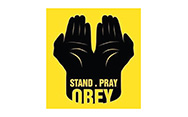

- 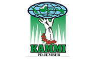
- 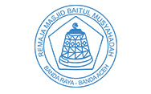
- 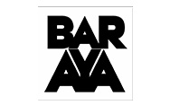
- 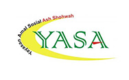
- 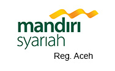
- 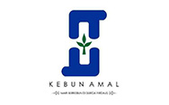
- 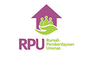
- 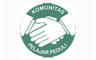
- 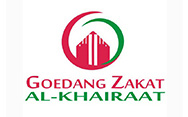
- 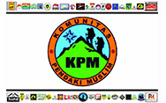